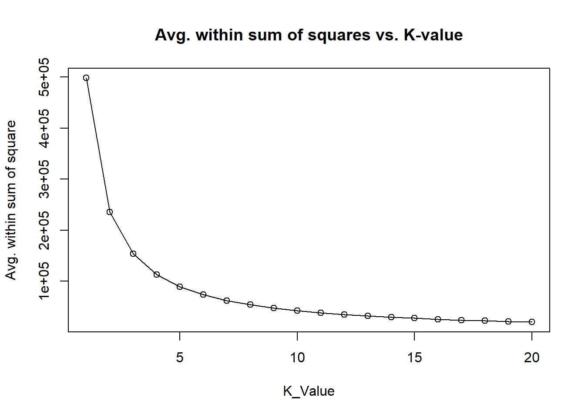
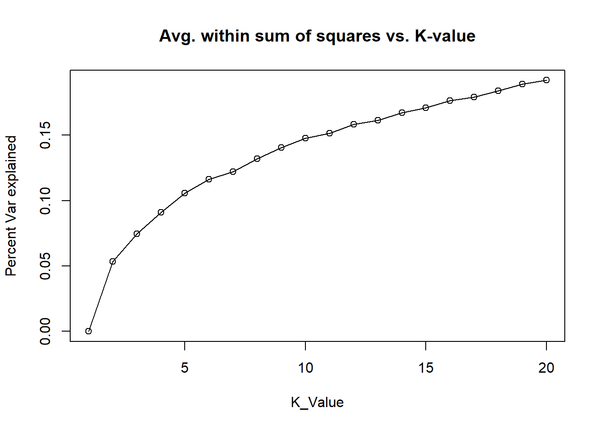

Data Mining
Unsupervised Learning
Data mining was performed to observe patterns of data in macroscopic observations or in the level of large data.
Author
Kwangmin Kim
Published
February 18, 2023
1 Data Mining
1.1 PCA (Principal Component Analysis)
1.2 K-means Clustering
Code
[1] "Avg. Within sum of squares"Code
[1] "K-Value 1 ,Avg.within sum of squares 498092.66"
[1] "K-Value 2 ,Avg.within sum of squares 235721.28"
[1] "K-Value 3 ,Avg.within sum of squares 153517.94"
[1] "K-Value 4 ,Avg.within sum of squares 113055.72"
[1] "K-Value 5 ,Avg.within sum of squares 89588.37"
[1] "K-Value 6 ,Avg.within sum of squares 73547.47"
[1] "K-Value 7 ,Avg.within sum of squares 62299.86"
[1] "K-Value 8 ,Avg.within sum of squares 53977.29"
[1] "K-Value 9 ,Avg.within sum of squares 47642.59"
[1] "K-Value 10 ,Avg.within sum of squares 42469.12"
[1] "K-Value 11 ,Avg.within sum of squares 38418.71"
[1] "K-Value 12 ,Avg.within sum of squares 35056.93"
[1] "K-Value 13 ,Avg.within sum of squares 32105.26"
[1] "K-Value 14 ,Avg.within sum of squares 29614.67"
[1] "K-Value 15 ,Avg.within sum of squares 27560.73"
[1] "K-Value 16 ,Avg.within sum of squares 25625.99"
[1] "K-Value 17 ,Avg.within sum of squares 24026.77"
[1] "K-Value 18 ,Avg.within sum of squares 22594.17"
[1] "K-Value 19 ,Avg.within sum of squares 21327.01"
[1] "K-Value 20 ,Avg.within sum of squares 20138.19"Code

Code
[1] "Percent. variance explained"Code
[1] "K-Value 1 ,Percent var explained 0"
[1] "K-Value 2 ,Percent var explained 0.0535"
[1] "K-Value 3 ,Percent var explained 0.0744"
[1] "K-Value 4 ,Percent var explained 0.0908"
[1] "K-Value 5 ,Percent var explained 0.1055"
[1] "K-Value 6 ,Percent var explained 0.1161"
[1] "K-Value 7 ,Percent var explained 0.122"
[1] "K-Value 8 ,Percent var explained 0.1318"
[1] "K-Value 9 ,Percent var explained 0.1404"
[1] "K-Value 10 ,Percent var explained 0.1477"
[1] "K-Value 11 ,Percent var explained 0.1514"
[1] "K-Value 12 ,Percent var explained 0.1583"
[1] "K-Value 13 ,Percent var explained 0.1614"
[1] "K-Value 14 ,Percent var explained 0.1671"
[1] "K-Value 15 ,Percent var explained 0.171"
[1] "K-Value 16 ,Percent var explained 0.1763"
[1] "K-Value 17 ,Percent var explained 0.1792"
[1] "K-Value 18 ,Percent var explained 0.1839"
[1] "K-Value 19 ,Percent var explained 0.1891"
[1] "K-Value 20 ,Percent var explained 0.1919"Code
